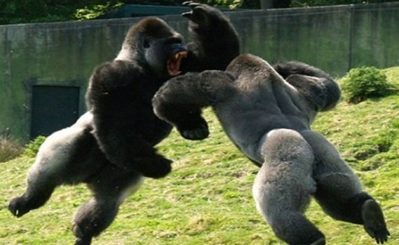
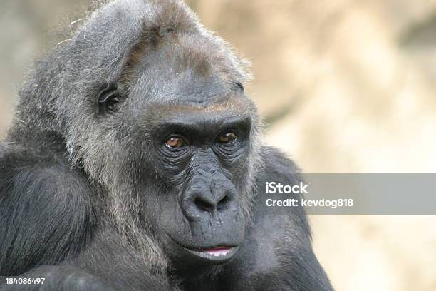

Gorilas bebês, com sua aparência encantadora e travessa, são verdadeiras jóias da natureza. Nascendo com cerca de 2 a 3 quilos, esses pequenos primatas são totalmente dependentes de suas mães para sobreviver e prosperar. À medida que crescem, os gorilas bebês começam a explorar o mundo ao seu redor, imitando os comportamentos de seus pais e irmãos mais velhos. A pelagem macia e escura desses filhotes oferece proteção e calor, enquanto seus olhos curiosos revelam um mundo repleto de descobertas. Os gorilas bebês são notáveis por sua capacidade de aprendizado, absorvendo informações e habilidades essenciais para sua futura sobrevivência na selva. Brincalhões e curiosos, os gorilas bebês frequentemente se envolvem em atividades lúdicas, como escaladas em árvores, imitação de adultos e até mesmo a famosa "roleta-russa de gorila", onde eles giram em círculos, exibindo suas personalidades únicas. Essas criaturas adoráveis representam a esperança para a conservação desses majestosos primatas, que enfrentam ameaças constantes em seu habitat natural devido à perda de floresta e caça ilegal. O estudo e a proteção dos gorilas bebês desempenham um papel vital na preservação de sua espécie, permitindo que futuras gerações apreciem a magnífica diversidade da vida selvagem em nosso planeta.
As gorilas fêmeas desempenham papéis fundamentais nas sociedades dos gorilas, vivendo em grupos familiares liderados por uma gorila dominante, geralmente a fêmea mais velha. Essas gorilas demonstram um notável cuidado materno, p rotegendo e nutrindo os filhotes. Além disso, as fêmeas desempenham um papel importante na transmissão de conhecimentos sociais e habilidades de sobrevivência para as gerações futuras. Sua contribuição é essencial para a coesão do grupo e a preservação da espécie.
Os gorilas machos, frequentemente chamados de "prateados" devido à cor prateada de suas costas, são os líderes das trupes de gorilas. Eles são notavelmente grandes e fortes, pesando até 200 quilos ou mais. A principal função de um gorila macho é proteger o grupo e manter sua integridade. Eles desempenham um papel crucial na defesa contra predadores e, às vezes, até mesmo em conflitos com outros grupos de gorilas. A posição de liderança de um gorila macho geralmente é alcançada por meio de uma combinação de força física, idade e carisma. No entanto, também mostram um lado gentil, especialmente com os filhotes, e podem estabelecer laços fortes com as gorilas fêmeas do grupo. Enquanto os gorilas machos são frequentemente associados à sua imponência e força, eles desempenham um papel vital na dinâmica social e na estabilidade das trupes de gorilas, garantindo a continuidade da espécie através de sua liderança e proteção.
Gorilas idosos, assim como os humanos mais velhos, enfrentam desafios de saúde e posição social à medida que envelhecem. Eles desempenham papéis valiosos no grupo, compartilhando experiência e conhecimento. No entanto, a expectativa de vida dos gorilas é mais curta do que a dos humanos, e a conservação de todas as faixas etárias é vital para sua sobrevivência.
